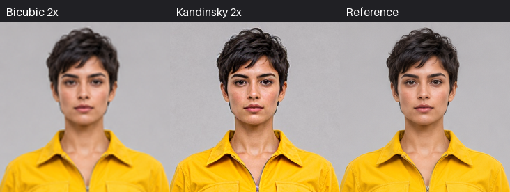
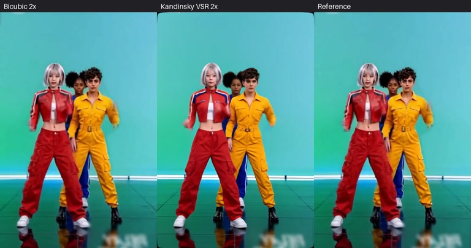

Kandinsky SR 2.0 로컬 설치 가이드
Apple Silicon Mac에서 사진은 ImageSR로, 동영상은 프레임 사이의 움직임을 함께 처리하는 VSR로 확대한다. 아래 설정은 M5 Ultra(80코어 GPU, 통합 메모리 256GB)에서 검증했다. 이미 설치된 이 Mac에서는 다음 쪽의 이미지 또는 영상 실행 단계부터 시작한다.
새 Mac에서 작업 폴더 준비
Git, uv, H.264 인코더가 포함된 FFmpeg를 준비한다. Homebrew가 설치되어 있다면 아래 명령으로 uv와 FFmpeg를 설치할 수 있다. 실행 도구 ZIP을 다운로드 폴더에 저장한 뒤 빈 작업 폴더에서 압축을 푼다.
Mac용 실행 도구 ZIP · uv 설치 안내 · FFmpeg 배포처
brew install uv ffmpeg
git --version
mkdir -p "$HOME/kandinsky-sr"
cd "$HOME/kandinsky-sr"
unzip "$HOME/Downloads/kandinsky-mac.zip"
bash install.sh설치 스크립트가 준비하는 항목
| 위치 | 내용 |
|---|---|
| image-source / video-source | 공식 Git 저장소에서 검증한 코드 버전을 각각 체크아웃한다. |
| .venv | Python 3.13.18 가상환경에 두 패키지를 설치한다. 주요 버전은 PyTorch 2.15.0과 Diffusers 0.43.0이다. |
| models/image · models/video | 지정한 Hugging Face 버전의 가중치를 받는다. 이 Mac의 디스크 사용량은 이미지 약 9.7 GiB, 영상 약 16 GiB였다. 가상환경과 출력 공간은 별도로 필요하다. |
| mps_attention.py | 영상 모델의 CUDA용 어텐션을 Mac의 PyTorch SDPA에서 실행한다. NABLA 블록 마스크를 유지하는 로컬 어댑터다. |
GPU 사용 확인
.venv/bin/python -c 'import torch; print(torch.backends.mps.is_available())'True이면 Apple GPU가 보인다. 첫 설치에는 인터넷이 필요하고, 두 모델 폴더를 받은 뒤에는 로컬 가중치로 실행한다.
이미지 한 장 확대하기
작업 폴더 선택
새로 설치했다면 설치 폴더에서 터미널을 연다. 기존 NEON 작업 환경은 아래 첫 줄로 이동한다. 결과는 results 폴더에 저장한다.
cd "$HOME/Documents/ChatGPT/캐릭터 스왑/kandinsky-sr"
mkdir -p results입력 사진과 출력 이름 지정
이 Mac에서는 이전에 만든 노란 캐릭터 사진으로 바로 실행할 수 있다. 다른 사진을 사용할 때는 첫 번째 경로를 입력 사진으로, 두 번째 경로를 새 PNG 이름으로 바꾼다.
.venv/bin/python upscale_image.py \
"../characters/03-yellow.png" results/yellow-2x.png --scale 2ImageSR은 RGB 이미지의 가로와 세로를 각각 2배로 확대한다. 2배 기본값은 1스텝, t=0.15다. 스크립트는 --scale 4도 받으며, 이 문서의 측정값은 모두 2배 실행 결과다.

원본 크기에서 확인할 부분
1086×1448 사진은 2172×2896으로 커졌고 첫 추론은 11.41초 걸렸다. 이미지를 100%로 열어 머리카락과 옷깃의 경계, 눈썹 모양, 피부 질감을 살핀다. 이 사진에서는 윤곽이 또렷해지면서 기준 이미지에 없던 피부 질감도 생겼다.

영상 구간을 원음과 함께 확대하기
제공하는 영상 명령은 시작 시점부터 25프레임을 24 fps로 추출해 한 번에 2배 복원한다. 출력 길이는 약 1.04초다. NEON 전체 영상 중 회전이나 빠른 손동작처럼 확인하고 싶은 장면을 지정할 수 있다.
시작 시간과 MP4 파일 지정
설치 폴더에서 실행한다. 이 Mac의 기존 FFmpeg는 아래 경로에 있다. 새 Mac에서 ffmpeg 명령이 이미 동작한다면 export 줄을 생략한다. --start의 단위는 초이며 출력에는 새 파일 이름을 쓴다.
export FFMPEG_BIN="$HOME/workspaces/swap/runtime/ffmpeg/bin/ffmpeg"
.venv/bin/python upscale_video.py \
"../NEON-전체-3인-캐릭터-스왑.mp4" \
results/neon-6s-2x.mp4 --start 6다른 영상은 첫 번째 경로를 바꾼다. 시작점 뒤에 25프레임이 남도록 선택한다. VSR은 BF16, PiFlow 2스텝, 시드 42를 사용한다. 결과는 H.264 MP4로 저장하며 입력에 오디오가 있으면 같은 구간을 AAC로 인코딩한다.

재생으로 검수
720×1280 구간은 1440×2560으로 확대됐고 25프레임 추론에 421.02초가 걸렸다. 나란히 재생하며 빠른 동작에서 얼굴과 손 모양이 달라지는지, 머리 윤곽이 프레임 사이에서 흔들리는지, 음악과 동작이 맞는지 확인한다.
원음 포함 1440×2560 샘플 · 세 영상 나란히 재생
실측 결과와 문제 해결
작은 입력의 처리 시간은 같은 입력을 두 번 실행한 두 번째 추론 시간이다. 원래 크기 입력은 모델 로딩 후 첫 추론을 쟀다. 파일 저장과 영상 인코딩 시간은 제외했다.
| 실험 | 입력 → 출력 | 추론 시간 |
|---|---|---|
| 이미지 축소 복원 | 384×512 → 768×1024 | 0.96초 |
| 원래 크기 이미지 | 1086×1448 → 2172×2896 | 11.41초 |
| 영상 축소 복원 | 256×384 → 512×768 · 25프레임 | 27.62초 |
| 원래 크기 영상 | 720×1280 → 1440×2560 · 25프레임 | 421.02초 |
선명도와 원본 일치도 비교
기준 이미지와 영상을 Lanczos로 절반 크기로 줄인 뒤 동일 입력을 두 방법으로 복원했다. PSNR과 SSIM은 값이 클수록 기준 원본과 가깝다. 영상은 인코딩 전 25프레임의 평균이다.
| 원본 일치도 | Kandinsky | 바이큐빅 |
|---|---|---|
| 이미지 PSNR / SSIM | 33.83 dB / 0.9366 | 38.24 dB / 0.9787 |
| 영상 PSNR / SSIM | 23.80 dB / 0.8585 | 39.78 dB / 0.9891 |
이 샘플에서는 두 모델 모두 선명한 세부를 생성했고, 원본 일치도는 바이큐빅이 높았다. 원래 크기에서 직접 확대한 결과에는 비교할 고해상도 정답이 없어 위 점수를 적용하지 않는다.
실행이 멈출 때 확인할 것
MPS가 False이면 Apple Silicon용 Python과 PyTorch를 사용하는지 확인한다. ffmpeg를 찾지 못하면 설치 경로나 FFMPEG_BIN을 확인한다. 가중치 파일이 빠졌다면 같은 폴더에서 bash install.sh를 다시 실행한다. 영상이 너무 짧다면 --start를 앞당긴다.
ImageSR 코드 · ImageSR 가중치 · VSR 코드 · VSR 가중치